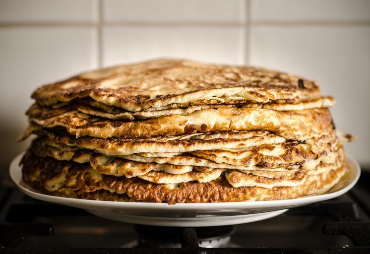

Home
Pancakes

Who dosen't like pancakes for breakfast. If it's you, keep looking. If you like them though you can try this
easy to make pancake recipe.
Ingredients
- 3 large eggs
- 3/4 cup cottage cheese
- 3/4 cup self-rising flour
- cooking spray
Directions
- Combine the eggs, cottage cheese, and flour in a blender. Then blend until smooth.
- Heat a nonstick skillet, griddle, or pan to medium heat. Apply cooking spray.
- Place about 3 tablespoons of batter onto the heated surface.
- Cook about 1 to 2 minutes or until the edges look sett.
- Flip over with a large turner (spatula).
- Cook for an addtional 1 to 2 minutes or until the bottom is browned.
- Serve with syrup, butter, berries, whatever you like.